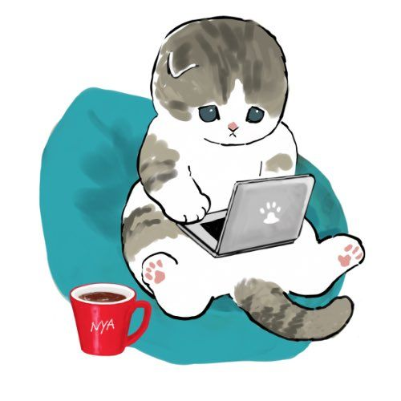

芳賀心美 (Cocomi HAGA)
出身地
宮城県仙台市
今住んでいるところ
仙台市
趣味
ゲームとアニメです！
特に去年switch２を買ったのでゲームに関心が強く、あつ森やポケモンZAなどをよくしています。
他にも、3か月ほど前から原神もやり始めました。キャラの育成の仕方に悩まされる日々です…。
お気に入り
このwebページを見ての通り猫が好きなので、よく猫グッズを集めてしまいます。
家で猫が飼えない分、自分の小物などを猫グッズで統一するのが好きです。

←このイラストのグッズが特に好きで、よく集めています！メッセージ
自分から声をかけに行くのは緊張しますが、声をかけてもらう場合は話せますので気軽に話しかけてくれると嬉しいです。
得意ではないのですが、プログラミングが好きなので頑張って覚えていきたいと思っています。
これから2年間、よろしくお願いします！